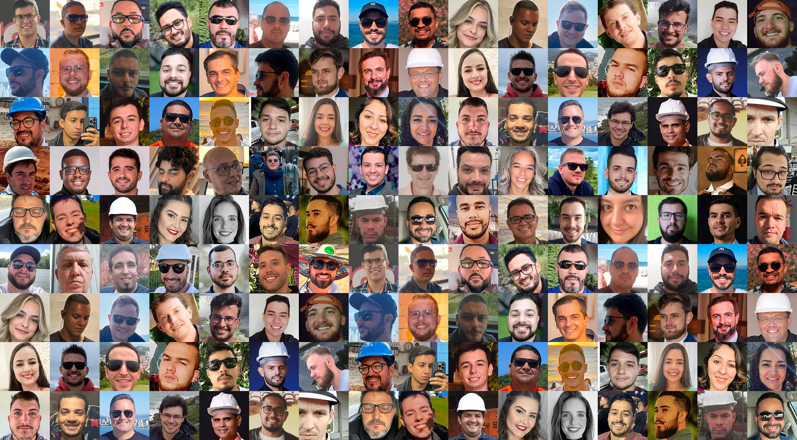
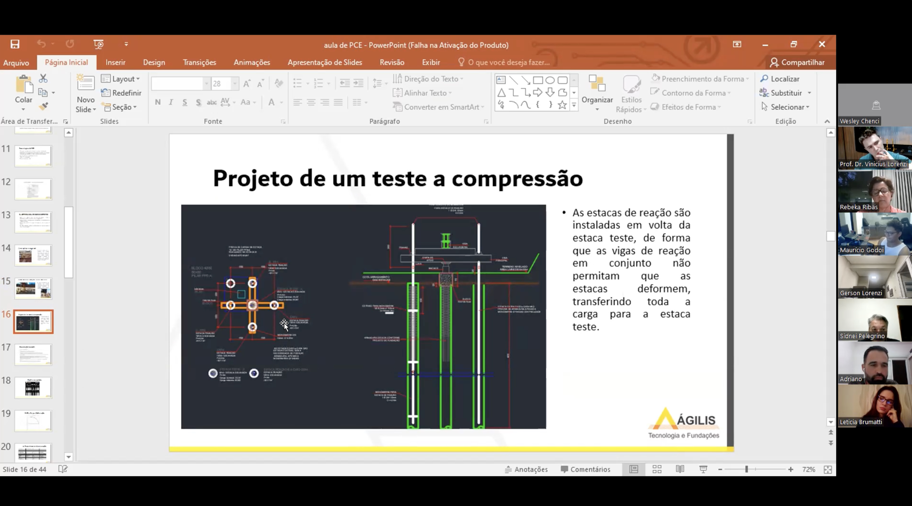
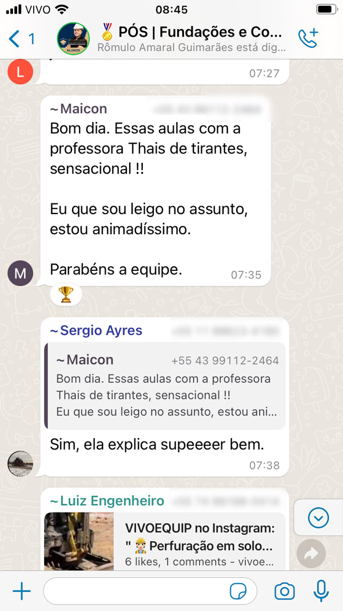
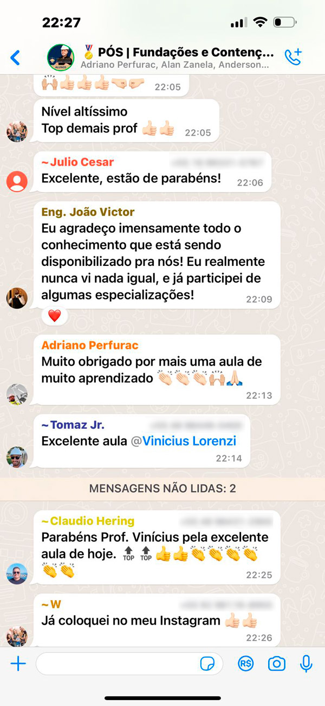
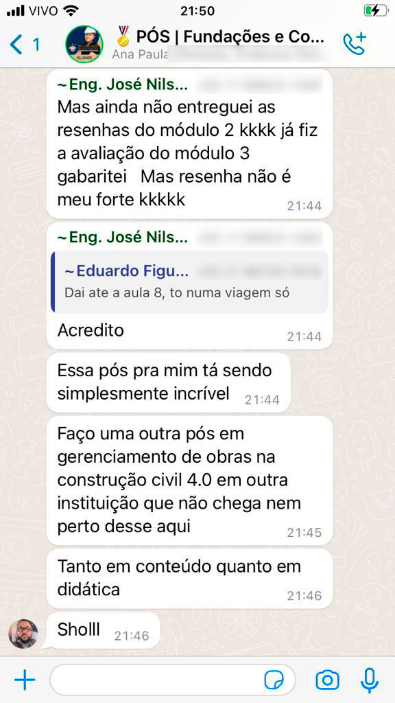
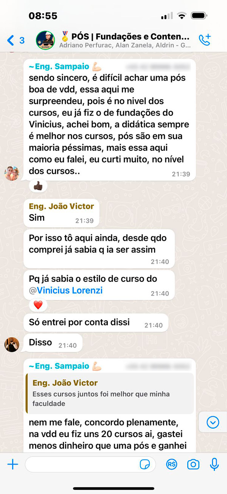
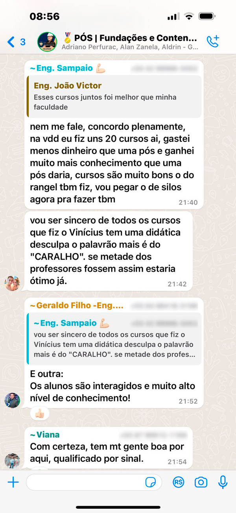

Instituto FSC.
Fundações Sem Complicações

Pós-Graduação em Engenharia de Fundações e Contenções!
Preencha abaixo e receba as informações da única Pós-Graduação que te leva do básico ao projeto completo de fundações e contenções, com foco 100% prático e aplicação direta em projetos geotécnicos.
Abaixo, veja mais informações sobre a Pós!
Somos o Instituto FSC,
Fundações Sem Complicações
Nossa missão é formar engenheiros capazes de se destacar e conquistar o novo patamar da engenharia de fundações e contenções.
A Pós-Graduação do Instituto FSC tem por objetivo mostrar como projetar com confiança, seguindo os passos de uma metodologia focada 100% na prática e no dia a dia do mercado.
+10.000
Profissionais formados no mercado

100% focada na prática
Do fundamento à execução,
Do fundamento à execução,
com obras reais desde o primeiro módulo
Você aprende dimensionando, projetando e decidindo direto em obra, com casos reais de projetos de pequeno, médio e grande porte.
O que rege o programa da pós-graduação: professores que trabalham, que são projetistas, que dimensionam e decidem fundações todos os dias.

Online · Ao Vivo
Encontros ao vivo com referências em Fundações e Contenções do Brasil
Ao longo da pós-graduação, você participa de encontros ao vivo recorrentes, com projetistas, especialistas e as maiores referências em fundações e contenções do Brasil.
Grupo de Evolução
O grupo da turma onde a prática e a vida real de fundações e contenções acontecem
O maior instituto de fundações do Brasil, com estrutura de suporte à altura.
- Discussão de projetos reais com colegas e professores tutores
- Tire dúvidas técnicas diretamente com quem executa em campo
- Oportunidades de trabalho compartilhadas dentro da turma
- Indicações de projetos em todo o Brasil




